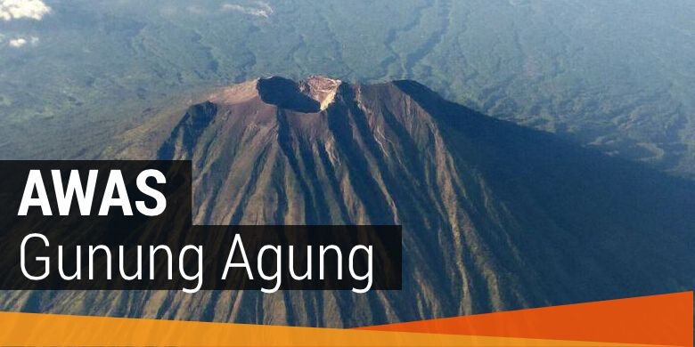

9 Tanda Tekanan Magma ke Puncak Gunung Agung Kian Nyata dan Kuat
KabarKabur.com -25/09/2017, 14:37 WIB

Gunung Agung di Bali.
KabarKabur.com -Intensitas kegempaan Gunung Agung di Kecamatan Rendang, Kabupaten Karangasem, Bali, mengalami peningkatan tajam sepanjang Minggu (24/9/2017).
Peningkatan kegempaan ini menunjukkan dobrakan tekanan magma ke atas (puncak) kian nyata dan kuat.
Hal tersebut disampaikan Kabid Vulkanologi dan Mitigasi Bencana Geologi Kementrian ESDM, I Gede Suantika, Minggu (24/9/2017), di Pos Pengamatan PVMBG, Desa Rendang, Karangasem.
"Kegempaan yang kami rekam besarnya semakin hari kian meningkat, dan itu berupa gempa-gempa terasa. Meningkatnya aktivitas kegempaan menunjukkan bahwa dobrakan tekanan magma ke atas itu kian nyata dan kuat," terangnya.
Semenjak status Gunung Agung ditetapkan Awas (Level IV), tingkatan tertinggi dalam gunung berapi, aktivitasnya memang semakin meningkat.
Peningkatan aktivitas gunung tertinggi di Bali ini dicirikan dengan:
1. Semakin banyaknya gempa-gempa vulkanik dalam, dangkal, serta gempa tektonik.
2. Bahkan beberapa kali gempa yang dirasakan dengan skala III-IV MMI (Modified Mercalli Intensity atau Skala Mercalli) dari Pos Pengamatan PVMBG Rendang.
3. Padahal sebelumnya pada Sabtu (23/9/2017) gempa yang dirasakan hanya dengan skala II MMI.
4. Tercatat, aktivitas kegempaan pada Minggu (24/9/2017) terhitung mulai pukul 00.00-06.00 Wita telah terjadi 178 kali gempa vulkanik dalam.
5. Sedangkan vulkanik dangkal 109 kali ,dan 13 kali gempa tektonik lokal. Terjadi satu kali gempa yang dirasakan dengan skala IV MMI.
6. Selanjutnya terhitung dari pukul 06.00-12.00 Wita terjadi 154 kali gempa vulkanik dalam, 102 kali vulkanik dangkal, dan 29 kali gempa tektonik lokal. Dari periode ini terjadi dua kali gempa yang dirasakan dengan skala IV MMI.
7. Pukul 12.00-18.00 Wita terjadi 146 gempa vulkanik dalam, 76 vulkanik dangkal, dan 22 gempa teknonik lokal. Sedikit menurun dibanding pada periode 12 jam sebelumnya.
8. Namun terjadi peningkatan gempa yang dirasakan di Pos Pengamatan PVMBG.
9. Pada Minggu (24/9/2017) sekitar pukul 13.00 Wita terjadi gempa yang getarannya cukup terasa, berkekuatan 3,2 skala ricther. Itu menunjukkan energi di dalam Gunung Agung semakin besar, dan mungkin penutupnya atau berupa lapisan permukaan Gunung Agung ini semakin lemah dengan adanya tekanan dari dalam.
"Terjadi empat kali gempa terasa dengan skala III sampai IV MMI," papar Suantika.
Menurut Kepala PVMBG, Kasbani, MMI adalah skala untuk mengukur intensitas gempa.
Skala ini menggambarkan efek yang dirasakan dari suatu gempa dari tempat yang kita rasakan.
"Skala MMI itu goncangan dan dampak gempa di tempat kejadian di mana kita berada. Saya berada di tempat pos pengamatan, sedangkan orang lain ada di tempat lain, skala MMI-nya berbeda," terang Kasbani, kemarin.
Untuk data skala MMI dari PVMBG berdasarkan apa yang dirasakan di Pos Pengamatan Desa Rendang.
Dijelaskan Kasbani, skala MMI dibagi 12 tingkatan dari I sampai yang paling parah yaitu skala XII.
Adapun aktivitas vulkanik Gunung Agung sejak Sabtu (23/9) hingga Minggu (24/9/2017) masih fluktuatif.
Dari segi kegempaan, aktivitas kegempaaan vulkanik dalam sudah mengalami perlambatan peningkatan.
"Tapi gempa vulkanik dangkal mulai meningkat perlahan. Artinya sumber tekanan seandainya terjadi letusan akan semakin dangkal," jelas Suantika.
Pada Minggu (24/9/2017) sekitar pukul 13.00 Wita terjadi gempa yang getarannya cukup terasa.
Suantika mengatakan gempa tersebut berkekuatan 3,2 skala ricther.
"Itu menunjukkan energi di dalam Gunung Agung semakin besar, dan mungkin penutupnya atau berupa lapisan permukaan Gunung Agung ini semakin lemah dengan adanya tekanan dari dalam. Itu yang menyebabkan guncangan terasa," jelas Suantika.
Sementara itu, kepulan asap solfatara kembali menyembul dari Gunung Agung, Minggu (24/9/2017) pagi.
Namun kepulan asap yang dikeluarkan tidak terlalu tebal.
Asap tipis ini mulai terpantau sejak pukul 06.00 Wita.
"Jadi kondisi terakhir pukul 06.00 Wita secara visual terlihat ada kepulan asap tipis mencapai ketinggian 200 meter dari puncak Gunung Agung. Kepulan asap itu dilaporkan juga dari Rendang dan dari utara ada laporan," jelasnya.
Munculnya kepulan asap putih dari kawah gunung ini mengindikasikan terjadinya pemanasan terus menerus.
"Tadi pagi juga kami lihat ada kepulan asap putih dari kawah. Itu mengindikasikan adanya pemanasan terus menerus. Begitu magmanya mendekat ke permukaan, pemanasan air lebih dulu menjadi uap. Ini yang menyembul ke atas," paparnya.
Sementara pantauan visual Gunung Agung di Pos Pengamatan di Desa Rendang pukul 07.00 Wita, Gunung Agung terlihat jelas walaupun diselimuti kabut tipis.
Namun pukul 11.20 Wita visual Gunung Agung tidak terlihat.
Gunung dengan ketinggian 3.031 meter di atas permukaan laut (mdpl) ini diselimuti awan mendung tebal disertai kabut.
Isu Meletus
Kemarin sempat beredar isu Gunung Agung akan meletus tadi malam.
Tidak jelas sumber yang menyebarkan isu tersebut hingga sempat membuat warga panik.
Kabar tak jelas tersebut mendapat tanggapan Kasbani.
Lewat situs resmi PVMBG kemarin, Kasbani menyatakan pihak PVMBG tidak dapat memastikan kebenarannya karena ramalan tersebut dilakukan dengan menggunakan pendekatan yang berbeda dengan apa yang dilakukan oleh PVMBG dalam memahami aktivitas gunungapi.
PVMBG melihat tanda-tanda aktivitas gunungapi melalui pengamatan secara menerus (24 jam/hari) secara visual maupun instrumental.
Analisis terakhir PVMBG mengindikasikan bahwa energi kegempaan vulkanik Gunungapi Agung terus meningkat dan memiliki potensi untuk meletus.
"Namun demikian, baik PVMBG maupun seluruh ahli gunungapi di dunia yang mempelajari aktivitas gunungapi secara ilmiah, belum ada satu pun yang mampu memastikan kapan letusan akan terjadi," kata Kasbani, yang lulusan S1 Teknik Vulkanologi di ITB Bandung dan S2 di Selandia Baru.
penulis :Yunanto Wiji Utomo
sumber :tribunnews.com